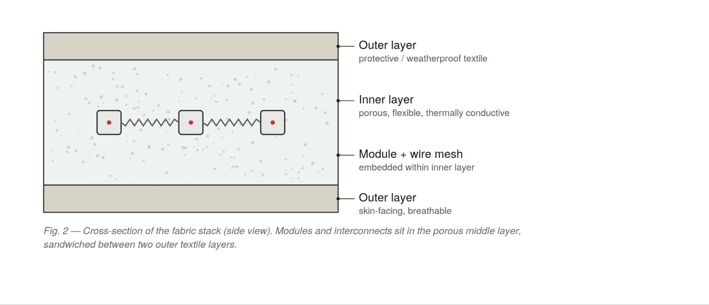
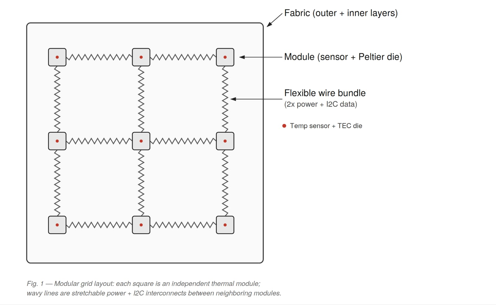

Adaptive Thermoregulating Fabric (ATRF)
Introduction
Temperature control clothing: basically a high-tech fabric that can be used to make clothes. What's special about these fabrics is they can regulate our body temperature in unpleasant environments.
It can be greatly helpful for winters, summers, or maybe in a college lecture hall where we are assumed to be penguins and the ACs are blasted at the lowest temperature—the fabric can regulate our body temperature accordingly.
Unlike conventional passive textiles that merely trap static air pockets, ATRF continuously senses localized skin surface temperatures in real time and actuates solid-state heating or cooling through an embedded mesh of microscopic thermal modules. Constructed as a decentralized two-dimensional array, the garment degrades gracefully under physical trauma: cutting, tearing, or piercing any section only disables local modules in that damaged zone, while the remainder of the garment continues regulating temperature completely uninterrupted.
Inspiration
Traditional clothing enforces a rigid compromise: bundle up in thick, bulky winter gear and overheat during physical exertion, or wear light garments and freeze in unexpected chill. I envisioned clothing operating like an artificial, active thermoregulatory organ—a responsive second skin that balances heat flux dynamically.

Conventional wearable heating relies on fragile, continuous wire loops where a single snag or cut breaks the entire circuit. ATRF solves this through architectural fault tolerance: independent, addressable modules linked by flexible serpentine interconnects that maintain system resilience even under severe textile wear.
Technical Details & Approach
Block Technology & Modular Architecture
In this design, the fabric uses a modular block architecture where small modules are interconnected to each other across a 2D mesh:
- Modules: Each module has its own temperature sensor and Peltier heating/cooling element. The modules are tiny, about 0.5 × 0.5 cm². The modules are responsible for sensing and regulating the temperature at that part of the fabric.
- Wires: There are 3 wires that connect two modules—two for power and the third for an I2C connection. This allows us to communicate with each module, read the temperature at that part of the fabric, and regulate temperature as commanded by the master microcontroller.
- Stretchable Interconnects: Each module is connected to neighbour modules with loose, stretchable, flexible wires. So if the fabric is cut or torn, modules at that region might be separated while the rest of the fabric works normally.
- Fabric Layering: The fabric has two external layers on each side sandwiching the internal layer. The internal layer is made up of flexible, porous (for breathability), and thermally conductive material—the modules and wires lie protected inside this layer.
| Component Feature | Module Specification | Functional Role |
|---|---|---|
| Physical Dimensions | ≈ 0.5 cm × 0.5 cm die | Compact profile seamlessly embeddable into flexible woven yarns |
| Integrated Sensor | Digital micro-thermistor / IR sensor | Provides high-precision local skin and ambient temperature telemetry |
| Thermal Actuator | Miniaturized Peltier Element (TEC) | Reversible solid-state heat pump: heats or cools based on current polarity |
| Communication Bus | I2C Addressable Bus (3-wire topology) | Shared multidrop bus for localized telemetry polling and command delivery |
| Power Distribution | 2-Wire DC Power Rail | Provides high-efficiency low-voltage power across the interconnected grid |
Other Features
- 1. Thermoelectric Energy Harvesting: The same fabric can also be used to harvest heat from our body (via the Seebeck effect) to generate a small amount of electricity when external temperature contrasts with body heat.
- 2. Health Telemetry & Diagnostics: The fabric can also monitor temperature at each point of the body to predict health complications or diseases (such as early fever onset, inflammation, or circulatory changes).
Current Limitations & Future Outlook
While the architecture is conceptually sound, physical implementation faces clear engineering bottlenecks:
- 1. Peltier Inefficiency: Current Peltier modules are inefficient and waste a lot of energy through resistive losses, which forces the need for larger battery packs.
- 2. Battery Packs: Large battery packs (10,000+ mAh, 3.7V) are heavy, costly, and not very durable inside daily clothing.
However, as the boom of electric vehicles (EVs) has made significant advancements in battery technologies, energy density, and flexible cells, this product might not be very far away.
References & Links
- › Adaptive Thermoregulating Fabric (ATRF) — Technical Documentation & Concept Architecture Draft (v0.1).
- › Research paper DOI and hardware prototype documentation will be updated soon.
- › Literature on Wearable Thermoelectric Generators and Stretchable E-Textiles.